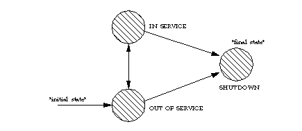

public interface Provider
Provider represents the telephony software-entity that interfaces with a
telephony subsystem.
Provider.IN_SERVICE, Provider.OUT_OF_SERVICE, or
Provider.SHUTDOWN. The Provider state represents whether any
action on that Provider may be valid. The following tables describes each
state:
Provider.IN_SERVICE
|
This state indicates that the Provider is currently alive and available for use. |
Provider.OUT_OF_SERVICE
|
This state indicates that a Provider is temporarily not available for use. Many methods in the Java Telephony API are invalid when the Provider is in this state. Providers may come back in service at any time, however, the application can take no direct action to cause this change. |
Provider.SHUTDOWN:
|
This state indicates that a Provider is permanently no longer available for
use. Most methods in the Java Telephony API are invalid when the Provider
is in this state. Applications may use the Provider.shutdown()
method on this interface to cause a Provider to move into the
Provider.SHUTDOWN state.
|
The following diagram shows the allowable state transitions for the Provider as defined by the core package.

JtapiPeer.getProvider() method which is given a string to
describe the desired Provider. This method sets up any needed communication
paths between the application and the Provider. The string given is one of
the services listed in the JtapiPeer.getServices(). JtapiPeers
particular implementation on a system and may be obtained via the
JtapiPeerFactory class.
ProviderListener interface. Applications instantiate objects
which implement this interface and use the
Provider.addProviderListener() method to begin the delivery of events.
All Provider events reported via this interface extend the
ProviderEvent interface.
Therefore, applications may then query the event object
returned for the specific state change, via the Event.getID() method.
In the core package API,
when the Provider changes state,
a ProviderEvent
is sent to the ProviderListener, having one of the following event ids:
PROVIDER_IN_SERVICE, PROVIDER_OUT_OF_SERVICE,
and PROVIDER_SHUTDOWN.
A ProviderEvent with event id
The PROVIDER_EVENT_TRANSMISSION_ENDED is delivered to all ProviderListeners
when the Provider
becomes unobservable and is the final event delivered to the listener.
Provider.getCalls() method. A Provider may have Calls
associated with it which were created before it came into existence. It is
the responsibility of the implementation of the Provider to model and
report all existing telephone calls which were created prior to the
Provider's lifetime. The Provider maintains references to all calls until
they move into the Call.INVALID state.
Applications may create new Calls using the
Provider.createCall() method. A new Call is returned in the
Call.IDLE state. Applications may then use this idle Call to
place new telephone calls. Once created, this new Call object is returned
via the Provider.getCalls() method.
Unlike Call objects, applications may not create Terminal or Address
objects. The Provider begins with knowledge of certain Terminal and Address
objects defined as its local domain. This list is static once the Provider
is created. The Addresses and Terminals in the Provider's domain are
reported via the Provider.getAddresses() and
Provider.getTerminals() methods, respectively.
Other Addresses and Terminals may be created sometime during the operation
of the Provider when the Provider learns of new instances of these objects.
These new objects, however, represent Addresses and Terminals outside the
Provider's domain. For example, if the Provider's domain is a PBX, the
Provider will know about all Addresses and Terminals in this PBX when the
Provider first starts. Any Addresses and Terminals it subsequently learns
about are outside this PBX. These Address and Terminal objects outside this
PBX are not reported via the Provider.getTerminals() and
Provider.getAddresses() methods. Address and Terminal objects
outside of the Provider's domain are referred to as remote.
Provider.getProviderCapabilities(),
Provider.getCallCapabilities(),
Provider.getAddressCapabilities(),
Provider.getTerminalCapabilities(),
Provider.getConnectionCapabilities(), and
Provider.getTerminalConnectionCapabilities().
Dynamic capabilities tell the application which actions are possible at the
time this method is invoked based upon the implementations knowledge of its
ability to successfully perform the action. This determination may be based
upon arguments passed to this method, the current state of the call model,
or some implementation-specific knowledge. These indications do not
guarantee that a particular method can be successfully invoked, however.
This interface returns the dynamic capabilities for a Provider object
via the Provider.getCapabilities() method. Note that this
method is distinct from the static capability method
Provider.getProviderCapabilities().
Also, multiple applications may request and communicate with the same
Provider implementation. Typically, since each application executes in its
own object space, each will have its own instance of the Provider object.
These two different Provider objects may, in fact, be proxies for a
centralized Provider instance. Certain methods in JTAPI are specified to
affect only the invoking applications and have no affect on others. The
only example in the core package is the Provider.shutdown()
method.
JtapiPeer,
JtapiPeerFactory,
ProviderListener| Modifier and Type | Field and Description |
|---|---|
static int |
IN_SERVICE
This state indicates that a Provider is currently available for use.
|
static int |
OUT_OF_SERVICE
This state indicates that a Provider is currently not available for use.
|
static int |
SHUTDOWN
This state indicates that a Provider is
permanently no longer available for use.
|
| Modifier and Type | Method and Description |
|---|---|
void |
addObserver(ProviderObserver observer)
Adds an observer to the Provider.
|
void |
addProviderListener(ProviderListener listener)
Adds an listener to the Provider.
|
Call |
createCall()
Creates and returns a new instance of the Call object.
|
Address |
getAddress(java.lang.String number)
Returns an Address object which corresponds to the telephone number string
provided.
|
AddressCapabilities |
getAddressCapabilities()
Returns the static capabilities of the Address object.
|
AddressCapabilities |
getAddressCapabilities(Terminal terminal)
Deprecated.
Since JTAPI v1.2. This method has been replaced by the
Provider.getAddressCapabilities() method.
|
Address[] |
getAddresses()
Returns an array of Addresses associated with the Provider and within the
Provider's domain.
|
CallCapabilities |
getCallCapabilities()
Returns the static capabilities of the Call object.
|
CallCapabilities |
getCallCapabilities(Terminal terminal,
Address address)
Deprecated.
Since JTAPI v1.2. This method has been replaced by the
Provider.getCallCapabilities() method.
|
Call[] |
getCalls()
Returns an array of Call objects currently associated with the Provider.
|
ProviderCapabilities |
getCapabilities()
Returns the dynamic capabilities for the instance of the Provider object.
|
ConnectionCapabilities |
getConnectionCapabilities()
Returns the static capabilities of the Connection object.
|
ConnectionCapabilities |
getConnectionCapabilities(Terminal terminal,
Address address)
Deprecated.
Since JTAPI v1.2. This method has been replaced by the
Provider.getConnectionCapabilities() method.
|
java.lang.String |
getName()
Returns the unique string name of this Provider.
|
ProviderObserver[] |
getObservers()
Returns a list of all ProviderObservers associated with this Provider
object.
|
ProviderCapabilities |
getProviderCapabilities()
Returns the static capabilities of the Provider object.
|
ProviderCapabilities |
getProviderCapabilities(Terminal terminal)
Deprecated.
Since JTAPI v1.2. This method has been replaced by the
Provider.getProviderCapabilities() method.
|
ProviderListener[] |
getProviderListeners()
Returns a list of all
ProviderListeners associated with this Provider
object. |
int |
getState()
Returns the current state of this Provider.
|
Terminal |
getTerminal(java.lang.String name)
Returns an instance of the Terminal class which corresponds to the
given name.
|
TerminalCapabilities |
getTerminalCapabilities()
Returns the static capabilities of the Terminal object.
|
TerminalCapabilities |
getTerminalCapabilities(Terminal terminal)
Deprecated.
Since JTAPI v1.2. This method has been replaced by the
Provider.getTerminalCapabilities() method.
|
TerminalConnectionCapabilities |
getTerminalConnectionCapabilities()
Returns the static capabilities of the TerminalConnection object.
|
TerminalConnectionCapabilities |
getTerminalConnectionCapabilities(Terminal terminal)
Deprecated.
Since JTAPI v1.2. This method has been replaced by the
Provider.getTerminalConnectionCapabilities() method.
|
Terminal[] |
getTerminals()
Returns an array of Terminals associated with the Provider and within the
Provider's domain.
|
void |
removeObserver(ProviderObserver observer)
Removes the given observer from the Provider.
|
void |
removeProviderListener(ProviderListener listener)
Removes the given listener from the Provider.
|
void |
shutdown()
Instructs the Provider to shut itself down and perform all necessary
cleanup.
|
static final int IN_SERVICE
static final int OUT_OF_SERVICE
static final int SHUTDOWN
int getState()
Provider.IN_SERVICE, Provider.OUT_OF_SERVICE,
or Provider.SHUTDOWN.
java.lang.String getName()
JtapiPeer.getProvider()
method to create this Provider instance.
JtapiPeerCall[] getCalls() throws ResourceUnavailableException
Call.INVALID state, the Provider
loses its reference to this Call. Therefore, all Calls returned by this
method must either be in the Call.IDLE or
Call.ACTIVE state. This method returns null if the Provider
has zero calls associated with it.
Post-conditions:
ResourceUnavailableException - Indicates the number of calls
present in the Provider is too great to return as a static array.Address getAddress(java.lang.String number) throws InvalidArgumentException
Provider.getAddresses().
Pre-conditions:
number - The telephone address string.InvalidArgumentException - The name, e.g. telephone number
of the Address does not
correspond to the name of any Address object known to the Provider or
within the Provider's domain.TsapiPlatformException - Implementation specific exception thrown if
a null string is passed.Address[] getAddresses() throws ResourceUnavailableException
Post-conditions:
ResourceUnavailableException - Indicates the number of addresses
present in the Provider is too great to return as a static array.TsapiPlatformException - Implementation specific exception thrown if
the security database is turned off or the user has unrestricted access.Terminal[] getTerminals() throws ResourceUnavailableException
Post-conditions:
ResourceUnavailableException - Indicates the number of terminals
present in the Provider is too great to return as a static array.TsapiPlatformException - Implementation specific exception thrown if
the security database is turned off or the user has unrestricted access.Terminal getTerminal(java.lang.String name) throws InvalidArgumentException
Provider.getTerminals().
Pre-conditions:
name - The name of desired Terminal object.InvalidArgumentException - The name provided does not correspond
to a name of any Terminal known to the Provider or within the Provider's
domain.TsapiPlatformException - Implementation specific exception thrown if
null is passed as a name or the device is not a terminal.void shutdown()
Provider.SHUTDOWN state, in which it will stay indefinitely.
If the Provider is already in the Provider.SHUTDOWN state,
this method does nothing. The invocation of this method should not affect
other applications which are using the same implementation of the Provider
object.
Post-conditions:
Call createCall() throws ResourceUnavailableException, InvalidStateException, PrivilegeViolationException, MethodNotSupportedException
Call.IDLE state and has no Connections. An
exception is generated if a new call cannot be created for various
reasons. This Provider must be in the Provider.IN_SERVICE
state, otherwise an InvalidStateException is thrown.
Pre-conditions:
ResourceUnavailableException - An internal resource necessary
to create a new Call object is unavailable.InvalidStateException - The Provider is not in the
Provider.IN_SERVICE state.PrivilegeViolationException - The application does not have
the proper authority to create a new telephone call object.MethodNotSupportedException - The implementation does not support
creating new Call objects.void addObserver(ProviderObserver observer) throws ResourceUnavailableException, MethodNotSupportedException
ProviderObserver interface. The Provider
object will report events to this interface for the lifetime of the
Provider object or until the observer is removed with the
Provider.removeObserver() method or until the Provider
is no longer observable.
If the Provider becomes unobservable, a ProvObservationEndedEv is
delivered to the application as is final event. No further events are
delivered to the observer unless it is explicitly re-added by the
application. When an observer receives a ProvObservationEndedEv it is
no longer reported via the Provider.getObservers() method.
This method is valid anytime and has no pre-conditions. Application must have the ability to add observers to Providers so they can monitor the changes in state in the Provider.
If an application attempts to add an instance of an observer already present on this Provider, then repeated attempts to add the instance of the observer will silently fail, i.e. multiple instances of an observer are not added and no exception will be thrown.
Post-conditions:
observer - The observer being added.MethodNotSupportedException - The observer cannot be added at this time.ResourceUnavailableException - The resource limit for the
numbers of observers has been exceeded.ProviderObserver[] getObservers()
Post-conditions:
void removeObserver(ProviderObserver observer)
Provider.getObservers() method.
Also, if an observer is not part of the Provider, then this method fails silently, i.e. no observer is removed an no exception is thrown.
Post-conditions:
observer - The observer which is being removed.ProviderCapabilities getProviderCapabilities()
NOTE: This method is different from the
Provider.getCapabilities(), method which returns the dynamic
capabilities of a Provider object instance.
CallCapabilities getCallCapabilities()
AddressCapabilities getAddressCapabilities()
TerminalCapabilities getTerminalCapabilities()
ConnectionCapabilities getConnectionCapabilities()
TerminalConnectionCapabilities getTerminalConnectionCapabilities()
ProviderCapabilities getCapabilities()
There are no arguments passed into this method for dynamic Provider capabilities
NOTE: This method is different from the
Provider.getProviderCapabilities() method which returns the
static capabilities for the Provider object.
ProviderCapabilities getProviderCapabilities(Terminal terminal) throws InvalidArgumentException, PlatformException
Note: This method has been replaced in JTAPI v1.2. The
Provider.getProviderCapabilities() method returns the static
Provider capabilities. This method now should simply invoke the
Provider.getProviderCapabilities(void) method.
terminal - This parameter is ignored in JTAPI v1.2 and later.InvalidArgumentException - This exception is never thrown
in JTAPI v1.2 and later.PlatformException - A platform-specific exception occurred.CallCapabilities getCallCapabilities(Terminal terminal, Address address) throws InvalidArgumentException, PlatformException
Note: This method has been replaced in JTAPI v1.2. The
Provider.getCallCapabilities() method returns the static
Call capabilities. This method now should simply invoke the
Provider.getCallCapabilities(void) method.
terminal - This argument is ignored in JTAPI v1.2 and later.address - This argument is ignored in JTAPI v1.2 and later.InvalidArgumentException - This exception is never thrown in
JTAPI v1.2 and later.PlatformException - A platform-specific exception occurred.ConnectionCapabilities getConnectionCapabilities(Terminal terminal, Address address) throws InvalidArgumentException, PlatformException
Note: This method has been replaced in JTAPI v1.2. The
Provider.getConnectionCapabilities() method returns the
static Connection capabilities. This method now should simply invoke the
Provider.getConnectionCapabilities(void) method.
terminal - This argument is ignored in JTAPI v1.2 and later.address - This argument is ignored in JTAPI v1.2 and later.InvalidArgumentException - This exception is never thrown in
JTAPI v1.2 and later.PlatformException - A platform-specific exception occurred.AddressCapabilities getAddressCapabilities(Terminal terminal) throws InvalidArgumentException, PlatformException
Note: This method has been replaced in JTAPI v1.2. The
Provider.getAddressCapabilities() method returns the static
Address capabilities. This method now should simply invoke the
Provider.getAddressCapabilities(void) method.
terminal - This argument is ignored in JTAPI v1.2 and later.InvalidArgumentException - This exception is never thrown in
JTAPI v1.2 and later.PlatformException - A platform-specific exception occurred.TerminalConnectionCapabilities getTerminalConnectionCapabilities(Terminal terminal) throws InvalidArgumentException, PlatformException
Note: This method has been replaced in JTAPI v1.2. The
Provider.getTerminalConnectionCapabilities() method returns
the static TerminalConnection capabilities. This method now should simply
invoke the Provider.getTerminalConnectionCapabilities(void)
method.
terminal - This argument is ignored in JTAPI v1.2 and later.
are being queriedInvalidArgumentException - This exception is never thrown in
JTAPI v1.2 and later.PlatformException - A platform-specific exception occurred.TerminalCapabilities getTerminalCapabilities(Terminal terminal) throws InvalidArgumentException, PlatformException
Note: This method has been replaced in JTAPI v1.2. The
Provider.getTerminalCapabilities() method returns the static
Terminal capabilities. This method now should simply invoke the
Provider.getTerminalCapabilities(void) method.
terminal - This argument is ignored in JTAPI v1.2 and later.InvalidArgumentException - This exception is never thrown in
JTAPI v1.2 and later.PlatformException - A platform-specific exception occurred.void addProviderListener(ProviderListener listener) throws ResourceUnavailableException, MethodNotSupportedException
ProviderListener interface. The Provider
object will report events to this interface for the lifetime of the
Provider object or until the listener is removed with the
Provider.removeProviderListener() method or until the Provider
is no longer observable.
If the Provider becomes unobservable, a ProviderEvent with
id PROVIDER_EVENT_TRANSMISSION_ENDED
is delivered to the application as is final event. No further events are
delivered to the listener unless it is explicitly re-added by the
application. When an listener receives PROVIDER_EVENT_TRANSMISSION_ENDED
it is
no longer reported via the Provider.getProviderListeners() method.
This method is valid anytime and has no pre-conditions. Application must have the ability to add listeners to Providers so they can monitor the changes in state in the Provider.
If an application attempts to add an instance of an listener already present on this Provider, then repeated attempts to add the instance of the listener will silently fail, i.e. multiple instances of an listener are not added and no exception will be thrown.
Post-conditions:
listener - The listener being added.MethodNotSupportedException - The listener cannot be added at this time.ResourceUnavailableException - The resource limit for the
numbers of listeners has been exceeded.ProviderListener[] getProviderListeners()
ProviderListeners associated with this Provider
object. If no listeners exist on this Provider, then this method returns
null.
Post-conditions:
void removeProviderListener(ProviderListener listener)
PROVIDER_EVENT_TRANSMISSION_ENDED;
subsequently, the listener will no longer be listed
by the Provider.getProviderListeners() method.
Also, if the listener is not currently registered with the Provider, then this method fails silently, i.e. no listener is removed an no exception is thrown.
Post-conditions:
PROVIDER_EVENT_TRANSMISSION_ENDED
is delivered to listener
listener - The listener which is being removed.Copyright © 2009 Avaya All Rights Reserved.